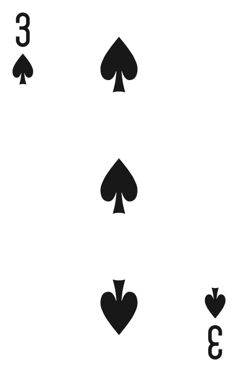
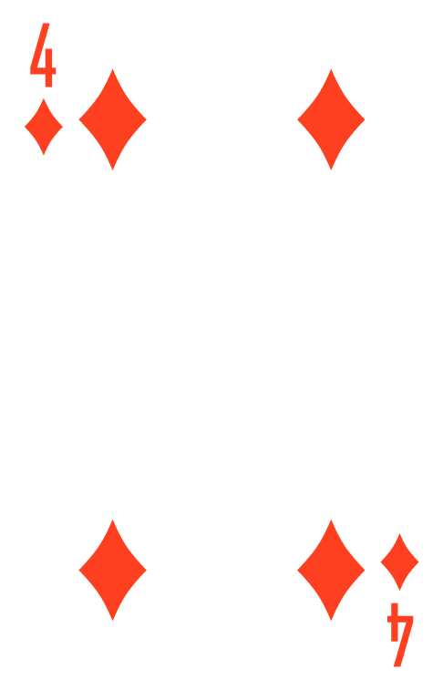
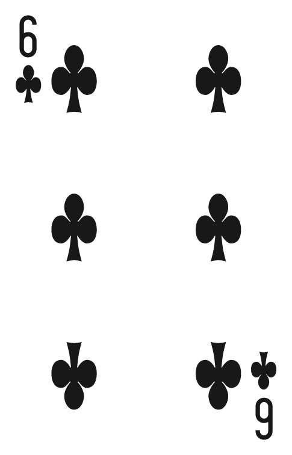

GUIDE TO POKER
Tips & Tricks








Poker improvement doesn’t come from memorizing rules alone—it comes from developing better habits and making fewer mistakes over time. Every strong player started by learning simple concepts, then slowly refined how they think about decisions at the table. The goal of this section is not to make you “perfect,” but to help you avoid common beginner traps and start thinking like a more disciplined player.
One of the most common beginner mistakes is playing too many hands just because they “look playable.” In reality, most hands are not strong enough to justify entering the pot. Experienced players are selective. They fold often, not because they are passive, but because they understand that most hands are statistically weak. By playing fewer hands, you avoid difficult situations and increase your chances of entering pots with an advantage. In poker, patience is not weakness—it is control.
Aggression in poker means betting and raising instead of just calling. When used correctly, it allows you to control the size of the pot and force opponents to make difficult decisions. However, aggression is only effective when it has a reason behind it. Random or emotional aggression usually leads to unnecessary losses. Good players choose specific moments where pressure creates value—either because they have a strong hand or because the situation favors a bluff. The key is not to be aggressive all the time, but to be aggressive at the right time.
Your position at the table changes the strength of your hand. Acting later gives you more information, which allows you to make more accurate decisions. For example, a marginal hand can often be folded in early position because many players still have a chance to act after you. The same hand might be worth playing in late position because you’ve already seen how others behave. Good players don’t treat hands in isolation—they evaluate them based on position and context.
Bluffing is one of the most misunderstood parts of poker. While it is an important tool, beginners often overuse it or use it in situations where it has little chance of success. A good bluff is not random—it is based on a believable story. It usually works best when your actions throughout the hand make sense and your opponent is capable of folding. If you bluff too often, players will start calling you more frequently, which reduces its effectiveness.
Poker is a game where even correct decisions can lead to losing a hand. This can make players frustrated, which often leads to worse decisions in future hands. One of the biggest differences between beginners and experienced players is emotional stability. Strong players accept short-term losses without changing their strategy. Staying calm allows you to think clearly and avoid “tilt,” which is when emotions start controlling your decisions instead of logic.
Most beginner mistakes come from overconfidence, impatience, or emotional reactions rather than lack of knowledge.
Poker improvement comes from discipline, not complexity. Play fewer hands, stay calm under pressure, and make decisions based on logic instead of emotion.


Email: 4play@4contact.se
Number: (336) 494-6281